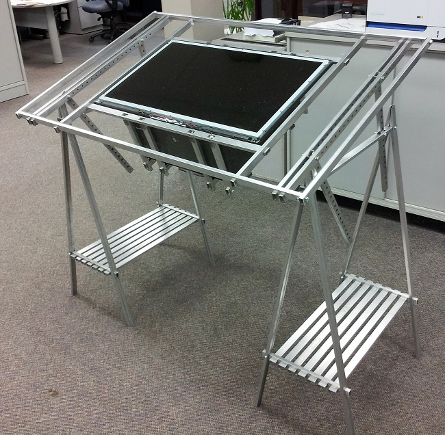
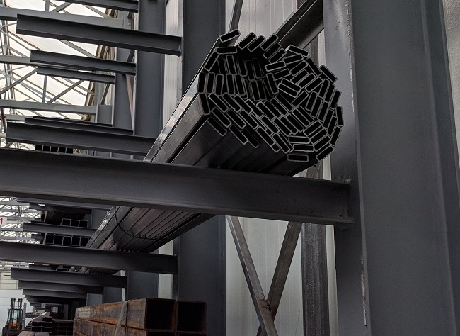
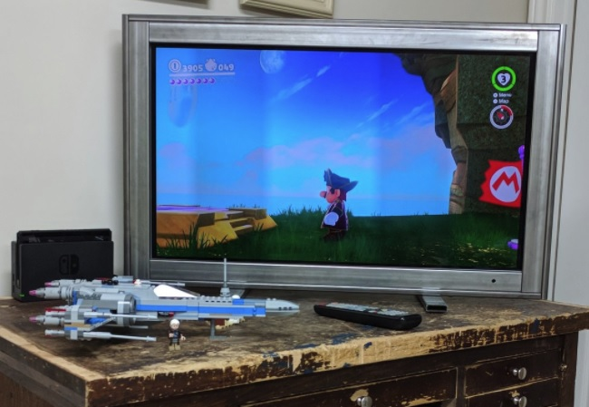

If you're not keen on reading through my design work, that's a bit of a shame, but I understand; we're busy people. Feel free to check out the downloads at the bottom of the article, though!
Several years ago I built a weird looking desk that had a PC and TV built right in. It never progressed beyond 'usable prototype', and was eventually disassembled. The TV had been partially stripped down to fit nicely in the desk's surface, and the old parts were discarded.

Since the TV is still good, I want to design a frame and stand that will allow me to actually use it again.
The frame must meet the following criteria:
Before the design can properly begin, some measurements will be needed. I walked around the shop and discovered a half-used bundle of some interesting material.

After checking that it was actually OK to use a length or two of this (it was), I pulled one length out and measured. The dimensions are shown below.
Conveniently, there is a work in progress dxf importer for CadQuery that should make it much simpler to work with 2D objects.
So, I made a .dxf file very similar to the above SVG, and imported it to create the tube that I'll use to define all of the tv frame's parts.
# make a simple sample piece
# to try out the dxf import function
sample_tube = (cq.Workplane('XY')
.workplane(offset=-1)
.dxf('downloads/profile.dxf')
.extrude(2)
)
show_object(sample_tube)
Alright, it works! Now I can work on the actual design.
This design is going to be a bit more advanced than my ipad_stand, so I've got a mental picture in mind that will take a few different parts:
Naming things is, generally speaking, a difficult thing to do. As such, it's much more sensible to see the parts than it is to rely solely on names. The next steps will be defining the CadQuery code to generate all of the parts in the list.
The horizontal frame pieces are identical, with a small exception for the bottom bar: two holes are cut in order to provide a mounting location for the legs.
L = 31.6772 # comes from width of scrn + offset due to tube dims
tap_01875 = 0.1495
outer_h_top = (cq.Workplane('XY')
.workplane(offset=-L/2.0)
.dxf('downloads/profile.dxf')
.extrude(L)
# holes on top face near edge
# will be tapped with 3/16 bolt thread
# used to mount inner frame tube
.faces('>Y').workplane()
.pushPoints([(-0.5, 13.3386),
(-0.5, -13.3386),
(-0.5, 6.6693),
(-0.5, -6.6693),
(-0.5, 0.0),])
.hole(tap_01875, depth=0.08)
# holes centered on back face
# 2 pairs of 3/16 tapped holes
# will mount back 'lock bar' tubes
.faces('<X').workplane()
.pushPoints([(0.0, 6.8386),
(0.0, 7.8386),
(0.0, -6.8386),
(0.0, -7.8386)])
.hole(tap_01875, depth=0.08)
# Cut the tube ends to create a 'dovetail'
# joint to hold the vertical tubes in place
# back left
.faces('>Y').workplane()
.moveTo(0.425, 15.3386)
.polyline([(0.425, 15.4086),
(0.5, 15.839),
(0.75, 15.839),
(0.75, 15.3386)]).close()
.cutThruAll()
# front left
.faces('>Y').workplane(centerOption='CenterOfBoundBox')
.moveTo(-0.425, 15.3386)
.polyline([(-0.425, 15.4086),
(-0.5, 15.839),
(-0.75, 15.839),
(-0.75, 15.3386)]).close()
.cutThruAll()
# back right
.faces('>Y').workplane(centerOption='CenterOfBoundBox')
.moveTo(0.425, -15.3386)
.polyline([(0.425, -15.4086),
(0.5, -15.839),
(0.75, -15.839),
(0.75, -15.3386)]).close()
.cutThruAll()
# front right
.faces('>Y').workplane(centerOption='CenterOfBoundBox')
.moveTo(-0.425, -15.3386)
.polyline([(-0.425, -15.4086),
(-0.5, -15.839),
(-0.75, -15.839),
(-0.75, -15.3386)]).close()
.cutThruAll()
)
show_object(outer_h_top)
tap_025 = 0.201
outer_h_bottom = (outer_h_top
.faces('<Y').workplane(centerOption='CenterOfBoundBox')
.pushPoints([(0.0, 7.3386),
(0.0, -7.3386)])
.hole(tap_01875, depth=0.08)
)
show_object(outer_h_bottom)
L = 19.6693 # comes from height of scrn + offset due to tube dims
tap_01875 = 0.1495
outer_v = (cq.Workplane('XY')
.workplane(offset=-L/2.0)
.dxf('downloads/profile.dxf')
.extrude(L)
# holes on top face near edge
# will be tapped with 3/16 bolt thread
# used to mount inner frame tube
.faces('<Y').workplane()
.pushPoints([(-0.5, 8.8507),
(-0.5, -8.8507),
(-0.5, 4.4173),
(-0.5, -4.4173),
(-0.5, 0.0),])
.hole(tap_01875, depth=0.08)
# Cut the tube ends to create the
# 'dovetail' slot
# left
.faces('>Z').workplane(centerOption='CenterOfBoundBox')
.moveTo(0.0, -0.135).rect(0.85, 0.25, centered=True)
.cutBlind(-0.5, clean=True)
.faces('>Z').workplane(centerOption='CenterOfBoundBox')
.moveTo(0.0, 0.135).rect(1.0, 0.25, centered=True)
.cutBlind(-0.5, clean=True)
# right
.faces('<Z').workplane(centerOption='CenterOfBoundBox')
.moveTo(0.0, 0.135).rect(0.85, 0.25, centered=True)
.cutBlind(-0.5, clean=True)
.faces('<Z').workplane(centerOption='CenterOfBoundBox')
.moveTo(0.0, -0.135).rect(1.0, 0.25, centered=True)
.cutBlind(-0.5, clean=True)
)
show_object(outer_v)
The inner frame components are identically designed. The horizontal bars are equivalent, as are the vertical bars. The only difference between the verticals and horizontals is the length. As such, the following code is parametric according to L, the tube's total length.
L = 27.6772 # horizontals
# L = 18.6693 # verticals
tap_01875 = 0.1495
pnts = [(0.0, 0.0),
(0.0, (L/2.0 - 0.5) ),
(0.0, -(L/2.0 - 0.5) ),
(0.0, (L/2.0 - 0.5)/2.0 ),
(0.0, -(L/2.0 - 0.5)/2.0 )]
inner = (cq.Workplane('XY')
.workplane(offset=-L/2.0)
.dxf('downloads/profile.dxf')
.extrude(L)
# holes on the side which are
# used to mount the inner frame
# to the outer frame
.faces('>X').workplane()
.pushPoints(pnts)
.hole(tap_01875, depth=0.08)
# Access holes cut on wide face
# which will be facing inwards
# when the whole frame is assembled
.faces('>Y').workplane()
.pushPoints(pnts)
.rect(1.05, 0.5)
.cutBlind(-0.08)
)
show_object(inner_h)
show_object(inner_v)
L = 10.0
stand = (cq.Workplane('XY')
.workplane(offset=-L/2.0)
.dxf('downloads/profile.dxf')
.extrude(L)
# hole on top for .25in bolt to pass through
.faces('>Y').workplane()
.hole(0.257, depth=0.08)
# Access hole on bottom
.faces('<Y').workplane()
.hole(0.9375, depth=0.08)
)
show_object(stand)
L = 19.6693 # comes from height of scrn + offset due to tube dims
tap_025 = 0.201
pnts = [(0.0, 0.0 ),
(0.0, (L/2.0 - 3.0) ),
(0.0, -(L/2.0 - 3.0) )]
end_holes = [( 0.5, (L/2.0 - 0.25) ),
(-0.5, (L/2.0 - 0.25) ),
( 0.5, -(L/2.0 - 0.25) ),
(-0.5, -(L/2.0 - 0.25) )]
lock_bar = (cq.Workplane('XY')
.workplane(offset=-L/2.0)
.dxf('downloads/profile.dxf')
.extrude(L)
# hole on bottom for .25in bolt
# to be threaded through for locking
.faces('<Y').workplane()
.pushPoints(pnts)
.hole(tap_025, depth=0.08)
# Access hole on top
.faces('>Y').workplane()
.pushPoints(pnts)
.hole(0.9375, depth=0.08)
# holes on ends for 3/16in
# screws to pass through
.faces('<Y').workplane()
.pushPoints(end_holes)
.hole(0.1875, depth=0.08)
# cut 45deg. triangles from
# tube ends for screw access
.faces('>X').workplane(centerOption='CenterOfBoundBox')
.moveTo(-0.25, (L/2.0) )
.polyline([( 0.25, (L/2.0) ),
( 0.25, (L/2.0) - 0.5 )]).close()
.cutThruAll()
.faces('>X').workplane(centerOption='CenterOfBoundBox')
.moveTo(-0.25, -(L/2.0) )
.polyline([( 0.25, -(L/2.0) ),
( 0.25, -(L/2.0) + 0.5 )]).close()
.cutThruAll()
)
show_object(lock_bar)
This frame is a bit more complex of an assembly, so the following code might get a bit messy. It'll show off the intended design, though.
import cqjupyter_extras as cqe
import cqtools
# PARTS LIST
# inner_h
# inner_v
# outer_h_bottom
# outer_h_top
# outer_v
# stand
# lock_bar
# all positions are in mm.
# There is definite need to improve the
# assembly workflow here.
asm = [
['stand', '0 0 186.4', '0 90 0' ],
['stand', '0 0 -186.4', '0 90 0' ],
['outer_h_bottom', '0 12.7 0', '0 0 0' ],
['inner_h', '12.7 38.1 0', '0 0 90' ],
['outer_v', '0 256.3 -395.95', '90 90 90' ],
['inner_v', '12.7 256.3 -370.55', '270 90 0' ],
['outer_v', '0 256.3 395.95', '270 90 270' ],
['inner_v', '12.7 256.3 370.55', '90 270 0' ],
['outer_h_top', '0 500.0 0', '180 0 0' ],
['inner_h', '12.7 474.4 0', '0 0 90' ],
['lock_bar', '-25.4 256.3 186.4', '90 270 0' ],
['lock_bar', '-25.4 256.3 -186.4', '90 270 0' ],
]
# cqe.cqassemble(asm, name='assembly')
# load the STEP files to build the .STEP assembly file
inner_h = cqtools._loadSTEP('downloads/inner_h.STEP')
inner_v = cqtools._loadSTEP('downloads/inner_v.STEP')
outer_h_bottom = cqtools._loadSTEP('downloads/outer_h_bottom.STEP')
outer_h_top = cqtools._loadSTEP('downloads/outer_h_top.STEP')
outer_v = cqtools._loadSTEP('downloads/outer_v.STEP')
stand = cqtools._loadSTEP('downloads/stand.STEP')
lock_bar = cqtools._loadSTEP('downloads/lock_bar.STEP')
asm2 = [
(stand
.rotate((0,0,0), (0,1,0), 90)
.translate((0, 0, 186.4))
.findSolid()
),
(stand
.rotate((0,0,0), (0,1,0), 90)
.translate((0, 0, -186.4))
.findSolid()
),
(outer_h_bottom
.rotate((0,0,0), (1,0,0), 0)
.translate((0, 12.7, 0))
.findSolid()
),
(inner_h
.rotate((0,0,0), (0,0,1), 90)
.rotate((0,0,0), (1,0,0), 180)
.translate((12.7, 38.1, 0))
.findSolid()
),
(outer_v
.rotate((0,0,0), (1,0,0), 270)
.rotate((0,0,0), (0,0,1), 180)
.translate((0, 256.3, -395.95))
.findSolid()
),
(inner_v
.rotate((0,0,0), (0,0,1), 90)
.rotate((0,0,0), (1,0,0), 270)
.translate((12.7, 256.3, -370.55))
.findSolid()
),
(outer_v
.rotate((0,0,0), (1,0,0), 90)
.rotate((0,0,0), (0,0,1), 180)
.translate((0, 256.3, 395.95))
.findSolid()
),
(inner_v
.rotate((0,0,0), (0,0,1), 90)
.rotate((0,0,0), (1,0,0), 90)
.translate((12.7, 256.3, 370.55))
.findSolid()
),
(outer_h_top
.rotate((0,0,0), (1,0,0), 180)
.translate((0, 500.0, 0))
.findSolid()
),
(inner_h
.rotate((0,0,0), (0,0,1), 90)
.translate((12.7, 474.4, 0))
.findSolid()
),
(lock_bar
.rotate((0,0,0), (0,0,1), 90)
.rotate((0,0,0), (1,0,0), 270)
.translate((-25.4, 256.3, 186.4))
.findSolid()
),
(lock_bar
.rotate((0,0,0), (0,0,1), 90)
.rotate((0,0,0), (1,0,0), 270)
.translate((-25.4, 256.3, -186.4))
.findSolid()
),
]
# Some weird syntax to properly create the compound geometry
# There is likely a cleaner way to do this, but I'm unaware currently
final = cq.cq.Compound.makeCompound(asm2)
assembly = cq.CQ(final)
show_object(assembly)
Once again I find myself kicking the laser tube cutter into action. I'm extremely lucky to remember how this thing works. As it turns out, I need to be good at last second maintenance for this thing. I had to search the shop for some hydraulic oil to top up the reservoir! Fortunately, everything still works.
With all the parts cut, it simply comes down to assembly. The pictures below show the process, more or less. Of course, the struggle of tapping the holes and tightening up all of the screws is not pictured.
And, just for fun, here's one final shot of my TV, quietly assisting me in enjoying some Nintendo Switch gaming.

I can finally use my TV again. Mission accomplished! I like the industrial look to the whole thing, too; I suspect there's no TV quite like this one.
Yet as always, there is room for improvement.
There it is, my design and build of an industrial-strength TV frame. Thanks for reading through my article. If you have any questions or suggestions, I'm glad to listen! Please ask away on my Twitter, @RustyVermeer.
I used several different programs to make this project:
CadQuery Github Page
FreeCAD
Jupyter
CQNB - Jupyter Notebook CadQuery Extension
* A-Frame VR
As mentioned at the start of this post, I've got some downloads for you to look at.